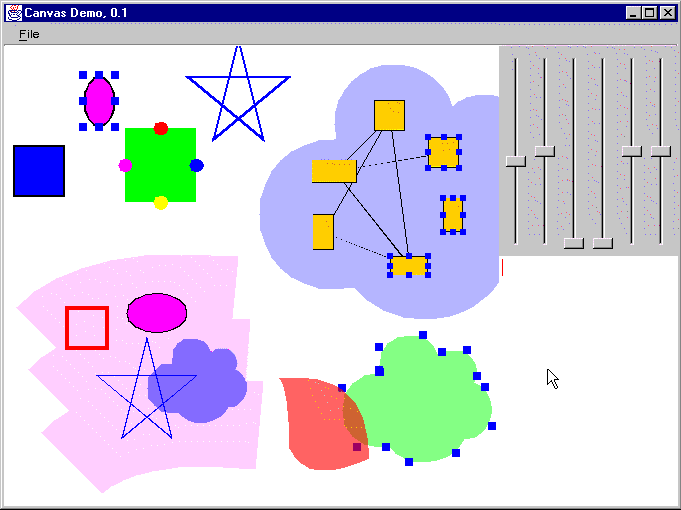

How to run the demoThe canvas demo shows off the basic architecture and feature of the canvas. At the top level of the window, the canvas contains an instance of GraphicsPane contains several figures.
The six sliders to the right of the window control the transform of the top-level canvas pane. They can be used to control the scale, rotation, translation (two sliders), and shear (two sliders) of the top-level pane with respect to the containing canvas. Note that all of the figure selection and editing operations work in the presence of arbitrary transforms.
The two larger figures are nested canvas panes. Each of them has a background, and contains a complex canvas pane of their own. Thus, visualization and editing components can be arbitrarily nested to any depth. (In a later release, we will provide level-of-detail and control to make this more useful.) In the example, the magenta "swatch" pane contains figures that can be selected but not reshaped, while the "cloud" blue pane contains the same graph editor pane shown in the graph example. (Nodes can be added and connected with edges.)
By default, mousing inside one of these embedded processes acts on the internals of the pane. To move and reshape the pane as a unit, first select it by drag-selecting on the top-level background, then drag it to move it or drag a grab-handle to reshape it.